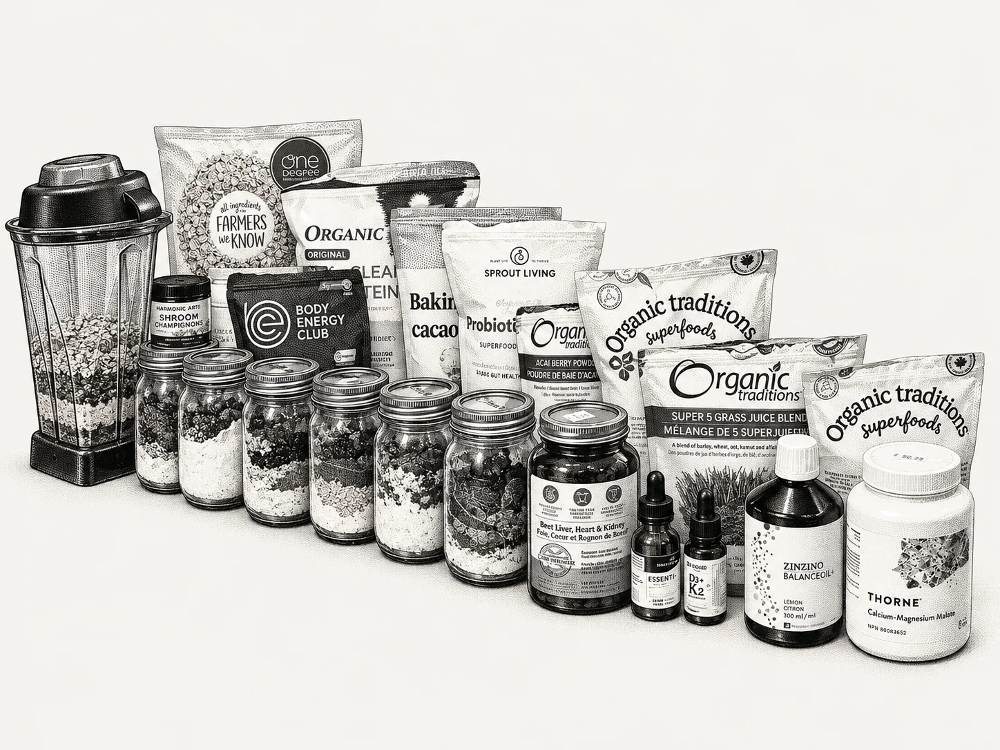

A busy day makes it easy to eat whatever is convenient. I wanted good nutrition to be the convenient choice.
For more than five years, I’ve been learning about my health, reading labels and trying ingredients and brands. Sleep, food and exercise are my foundations; meditation helps me look after my mind. This smoothie is how I make the food part easier during a long workday.
I prepare seven jars of dry ingredients at once. Each morning, I blend one with frozen fruit and water. Different fruit keeps it interesting. I keep it chilled and sip it through my eight-to-ten-hour workday. It keeps me feeling full, and I still enjoy a simple meal at home: vegetables, protein and a little healthy carbohydrate.
So far, my tests haven’t flagged nutritional deficiencies. That’s my experience, not proof that this recipe covers everyone’s needs. I’ve also explored gut microbiome testing as part of understanding myself. What works for me may not work for you.
I’m sharing a routine that has made eating well easier for me. Start with food you enjoy, pay attention to how you feel, and make it your own.
Before my smoothie
| Essential AAsk Upgrade Labs about availability | 1 drop |
|---|---|
| DK2Ask Upgrade Labs about availability | 10 drops |
| BalanceOil+ | 1½ teaspoons (7.5 mL) |
These are my amounts. BalanceOil+ serving guidance depends on body weight. Essential A and DK2 links go to Upgrade Labs locations for product enquiries.
I’m considering switching to Suppgrade Labs DAKE, which combines vitamins D3, A, K1/K2 and E. I haven’t made that switch yet.
What's in one jar

Repeat the dry ingredients in each of seven jars. Add the fruit and water when you blend.
| Ingredient / product | Per jar |
|---|---|
| OatsOne Degree Organic Sprouted Rolled Oats | 87 g |
| WheyMt. Capra Clean Whey, unsweetened, grass-fed goat | 2–3 scoops (30–45 g) |
| Plant proteinSprout Living Epic Protein, Original, unflavoured | 1 scoop (19 g); half a label serving |
| CollagenOrganika Enhanced Collagen Protein, unflavoured | 1 scoop (5 g); half a label serving |
| Pumpkin seedsBassé Organic Pumpkin Seeds, roasted and salted | 1/3 cup (50 g) |
| CocoaRodelle Organic Baking Cocoa | 1 tbsp (6 g) |
| CreatineBody Energy Club Creapure creatine monohydrate | 1 scoop (5 g) |
| Beet rootOrganic Traditions Beet Root Powder | 1 tbsp (4 g) |
| Five grassOrganic Traditions Super 5 Grass Juice Powder | 1 tsp (8 g) |
| MoringaOrganic Traditions Moringa Leaf Powder | 2 tsp (5 g) |
| Açaí (sometimes)Organic Traditions Acai Berry Powder | 1 tbsp (10 g) |
| InulinSprout Living Organic Prebiotic Inulin | 1/2 tsp (2.5 g) |
| Five mushroomHarmonic Arts 5 Mushroom Concentrated Powder | 1/2 tsp (1.25 g) |
| ElectrolytesOrganika Electrolytes Extra Strength | 1 scoop |
| Frozen fruitKirkland Signature frozen blueberries, or my choice of frozen fruit | 1 cup |
| WaterWater | To preferred thickness |
My electrolyte powder includes prebiotic soluble vegetable fibre. Body Energy Club lists 1,000 mg sodium, 186 mg potassium and 79 mg magnesium per scoop (6 g). I paid $39.99 for the container. Product and label details.
Keep the blended smoothie refrigerated or in an insulated container with ice packs throughout the day.
My other meal
My usual protein is half a whole chicken, 200–300 g of salmon fillet, or a generous steak of about 300–400 g. Alongside it: a bowl of baby arugula or a frozen vegetable mix, sometimes with a little healthy carbohydrate.
My homemade mayo-based sauce makes the vegetables something to look forward to. It’s easy, delicious, and even the kids polish it off. I may share those recipes in another post.
On days without red meat, I take three capsules of Land Promise Essential Organs: beef heart, kidney and liver.
At night
- Ashwagandha root powder · 1 teaspoon
- Magnesium malate
- Magnesium glycinate
- Magnesium L-threonate
No affiliate links. No sponsorship. These are products I’ve chosen through years of trying what I can buy locally or have shipped to me. They’re my choices, not a claim that other brands are inferior. I earn nothing from these links.
This is my personal routine, not a prescription or a nutritionally complete meal plan. I hope it gives you a useful starting point for your own.